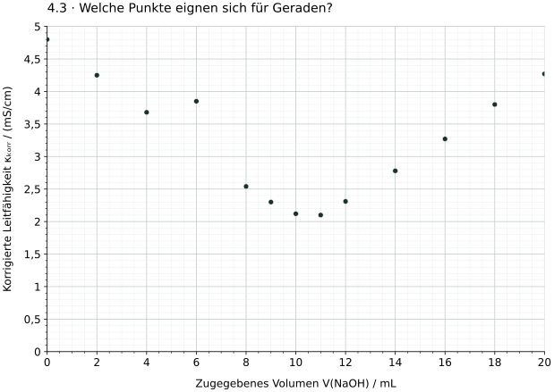
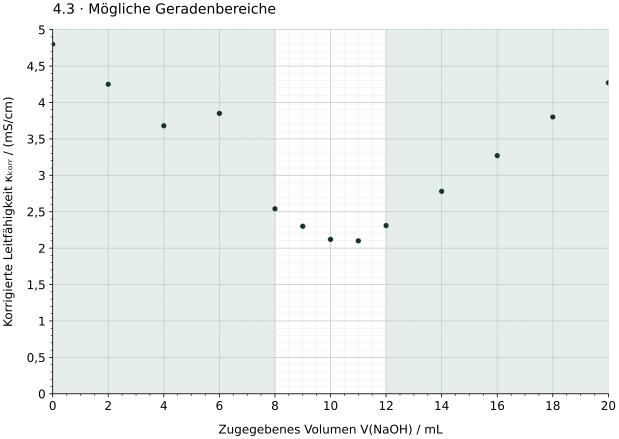

Welche Bereiche sind annähernd linear?
Die Grafik zeigt eine didaktische Säure-Base-Titrationskurve. Die Werte sind bereits volumenkorrigiert; die Temperatur ist konstant. Kleine Streuungen und ein einzelner auffälliger Wert wurden bewusst eingebaut. Über dessen Ursache liegen keine weiteren Angaben vor.

Wertetabelle zur Grafik
| V(NaOH) / mL | κkorr / (mS/cm) |
|---|---|
| 0,0 | 4,80 |
| 2,0 | 4,25 |
| 4,0 | 3,68 |
| 6,0 | 3,85 |
| 8,0 | 2,54 |
| 9,0 | 2,30 |
| 10,0 | 2,12 |
| 11,0 | 2,10 |
| 12,0 | 2,31 |
| 14,0 | 2,78 |
| 16,0 | 3,27 |
| 18,0 | 3,80 |
| 20,0 | 4,27 |

Vier Vorschläge beurteilen
| Vorschlag | Ausgewählte Punkte |
|---|---|
| A | Links alle Punkte von 0 bis 10 mL, rechts alle Punkte von 10 bis 20 mL. |
| B | Links den Bereich 0 bis 8 mL, rechts den Bereich 12 bis 20 mL; den Wert bei 6 mL zusätzlich prüfen. |
| C | Nur die vier Punkte bei 0, 8, 12 und 20 mL; je zwei Punkte bestimmen eine Gerade. |
| D | Links nur die beiden Punkte bei 4 und 6 mL, rechts nur die beiden bei 10 und 11 mL. |
- Beurteile jeden Vorschlag. Wähle geeignete Bereiche und begründe deine Entscheidung anhand der Punktverteilung.
- Erkläre, warum die Übergangspunkte nicht zu den Ausgleichsgeraden gehören, obwohl sie Teil der Datenreihe bleiben.
- Beschreibe den Umgang mit dem auffälligen Punkt bei 6 mL. Darfst du ihn ohne weitere Begründung entfernen?
Hilfe 1: Auf systematische Krümmung achten
In einem geeigneten Bereich liegen mehrere Punkte über eine größere Volumenspanne näherungsweise um eine Gerade. Kleine wechselnde Abweichungen sind normal. Eine Reihe von Punkten, die systematisch vom geraden Verlauf abbiegt, weist dagegen auf einen Übergang hin.
Hilfe 2: Auswahl und Ausschluss unterscheiden
Den gekrümmten Übergang lässt du aus der Geradenanpassung heraus, weil dort das lineare Modell nicht passt. Ein einzelner auffälliger Punkt innerhalb eines sonst linearen Bereichs ist ein anderer Fall: Seine Ursache ist zunächst ungeklärt. „Die Gerade sieht schöner aus“ ist keine ausreichende Begründung zum Löschen.
Musterlösung: Bereiche und Begründung

A: Die Auswahl bezieht den gekrümmten Übergang ein. Dadurch können die Geraden systematisch verzerrt werden.
B: Das ist eine geeignete Ausgangswahl: Mehrere Punkte decken auf beiden Seiten eine größere Volumenspanne ab. Der auffällige Wert bei 6 mL verlangt aber eine gesonderte Prüfung.
C: Zwei Punkte legen zwar mathematisch eine Gerade fest. Die übrigen Punkte liefern jedoch wichtige Information über Streuung und Verlauf. Für eine Ausgleichsgerade sollte diese Information genutzt werden.
D: Die Volumenspannen sind klein. Links beeinflusst der auffällige Punkt die Gerade stark; rechts liegen beide Punkte im Übergang. Die Auswahl ist ungeeignet.
Übergang: Die Punkte bei 9–11 mL biegen vom jeweiligen linearen Ast ab. Sie bleiben echte Bestandteile der Datenreihe, werden aber nicht zur Bestimmung der beiden linearen Äste verwendet.
Auffälliger Punkt: Er wird markiert und seine Abweichung dokumentiert. Erst ein begründeter Nachweis, etwa eines Übertragungsfehlers in den vorhandenen Daten, erlaubt eine Korrektur oder einen Ausschluss. Fehlt eine solche Information, wird der Punkt nicht stillschweigend gelöscht. Man kann offen vergleichen, wie stark er das Ergebnis beeinflusst, und die verbleibende Unsicherheit benennen.
Eine Ausgleichsgerade muss nicht durch jeden Punkt gehen. Kleine, unregelmäßige Streuungen sind kein Grund, so lange Daten zu streichen, bis alles exakt auf einer Linie liegt.
Zurück zur Checkliste
Kannst du normale Streuung, einen gekrümmten Übergang und einen einzelnen auffälligen Wert unterscheiden und für jeden Fall eine passende Entscheidung begründen?
Fachliche Quellen und Modellgrenzen
- IUPAC (2019): Terminology of electrochemical methods of analysis, Abschnitt 6.7.1: konduktometrische Auswertung über den Schnittpunkt linearer Kurvenabschnitte.
- NIST/SEMATECH: Detection of Outliers: auffällige Werte prüfen und einen Ausschluss begründen.
Alle Daten und Grafiken wurden für die Aufgabe erzeugt. Der Übergang ist didaktisch gerundet, der Wert bei 6 mL absichtlich auffällig. Die Seite behandelt die Auswahl eines passenden linearen Modells; ein statistischer Ausreißertest ist nicht vorausgesetzt.